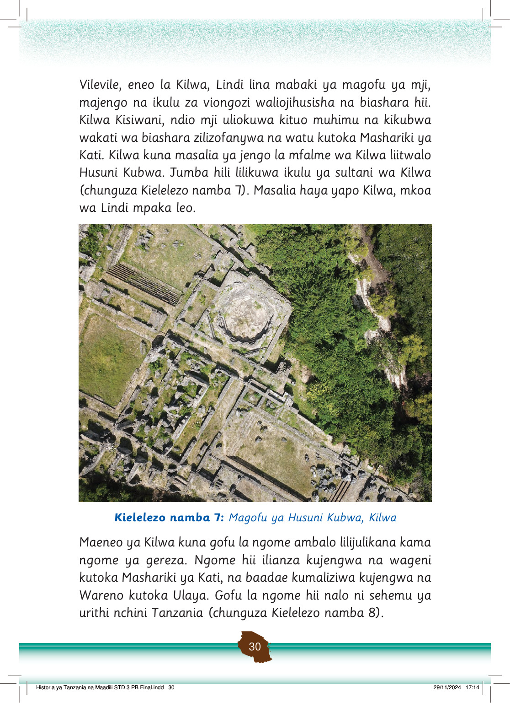

Vilevile, eneo la Kilwa, Lindi lina mabaki ya magofu ya mji, majengo na ikulu za viongozi waliojihusisha na biashara hii.
Kilwa Kisiwani, ndio mji uliokuwa kituo muhimu na kikubwa wakati wa biashara zilizofanywa na watu kutoka Mashariki ya Kati.
Kilwa kuna masalia ya jengo la mfalme wa Kilwa liitwalo Husuni Kubwa.
Jumba hili lilikuwa ikulu ya sultani wa Kilwa (chunguza Kielelezo namba 7).
Masalia haya yapo Kilwa, mkoa wa Lindi mpaka leo.
Magofu ya Husuni Kubwa, Kilwa, yanaonekana kutoka juu. Kuta za mawe na mabaki ya majengo ya zamani yapo karibu na miti mingi.
Kielelezo namba 7: Magofu ya Husuni Kubwa, Kilwa
Maeneo ya Kilwa kuna gofu la ngome ambalo lilijulikana kama ngome ya gereza.
Ngome hii ilianza kujengwa na wageni kutoka Mashariki ya Kati, na baadae kumaliziwa kujengwa na Wareno kutoka Ulaya.
Gofu la ngome hii nalo ni sehemu ya urithi nchini Tanzania (chunguza Kielelezo namba 8).